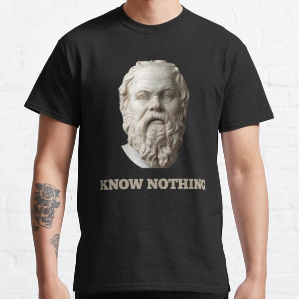

SOCRATES
"The only true wisdom is in knowing you know nothing"
Socrates quotes
- "Employ your time in improving yourself by other men’s writings so that you shall come easily by what others have labored hard for".
- "Well I am certainly wiser than this man. It is only too likely that neither of us has any knowledge to boast of; but he thinks that he knows something which he does not know, whereas I am quite conscious of my ignorance. At any rate it seems that I am wiser than he is to this small extent, that I do not think that I know what I do not know".
- "The beginning of wisdom is a definition of terms".
- "I was afraid that by observing objects with my eyes and trying to comprehend them with each of my other senses I might blind my soul altogether".
- "Where there is reverence there is fear, but there is not reverence everywhere that there is fear, because fear presumably has a wider extension than reverence".
- "I only wish that ordinary people had an unlimited capacity for doing harm; then they might have an unlimited power for doing good".
- "Ordinary people seem not to realize that those who really apply themselves in the right way to philosophy are directly and of their own accord preparing themselves for dying and death".
- "When desire, having rejected reason and overpowered judgment which leads to right, is set in the direction of the pleasure which beauty can inspire, and when again under the influence of its kindred desires it is moved with violent motion towards the beauty of corporeal forms, it acquires a surname from this very violent motion, and is called love".
For more phrases, visit thiswebsite.